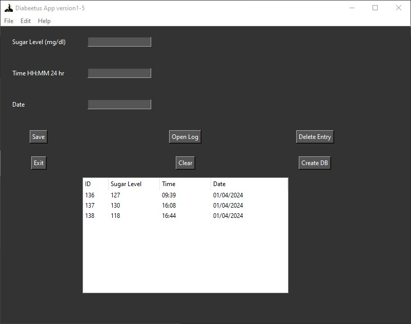

This is one of the first applications that I made using a GUI for input/output instead of a terminal. The data entries are stored as a SQL file and can be edited by the buttons in the GUI which represent SQL commands.
Click the open log button to retrieve the data from the database:

The result of clicking open log

You can also search for records by date:
Go to File -> Search Date to search for a specific date:

Results:
